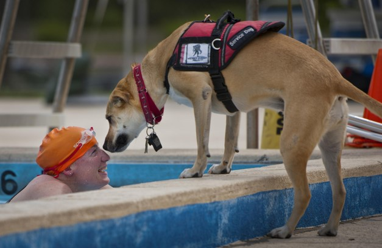

What we do?
보조견과 함께하는 사회를 꿈꾸며
한국에서 보조견에 대한 사회적 인식과 제도가 미흡한 상황 속에서,
보조견 사용자의 권리 보호와 올바른 보조견 문화를 정착시키기 위해 단체를 설립하였습니다.
공공장소에서 보조견이 자연스럽게 받아들여질 수 있도록 하는 것이 우리의 목표입니다.
Why "General" ?
General : ‘일반적인’, ‘보편적인’
저희의 팀명 General은 ‘일반적인’, ‘보편적인’이라는 의미를 담고 있으며, 보조견과 그 사용자들이 특별한 시선이 아닌 일상의 일부로 자연스럽게 받아들여지는
사회를 지향합니다.
저희는 장애인과 비장애인 모두가 평등하게 살아갈 수 있는 보편적인(General) 세상을 이루어내는 선두주자(General)가 되고자 합니다.
보조견과 사용자들이 일반인들과 더불어 살아가는 평등한 사회를 만들기 위해, 깊숙한 곳에서부터 변화를 시작하겠습니다.

설립배경
시각장애인 안내견만이 보조견은 아닙니다
해외의 여러 사례를 살펴보면, 다양한 종류의 보조견이 존재합니다. 보조견의 문화가 발달한 영국과 프랑스에서는 시각장애인 안내견 외에도 청각장애인, 지체장애인을 위한 보조견, 의료대응견, 간질 발작 대응견, 정서지원견 등 다양한 보조견이 활동하고 있습니다.
